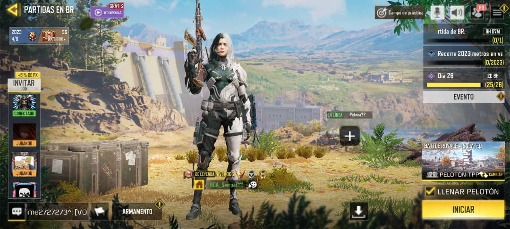
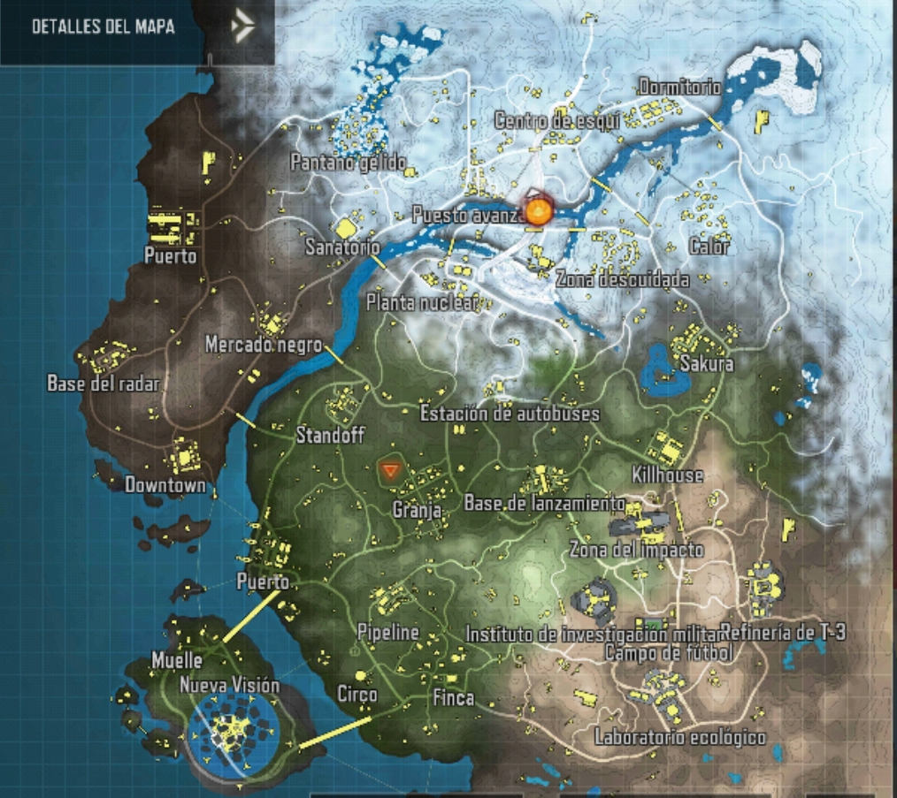
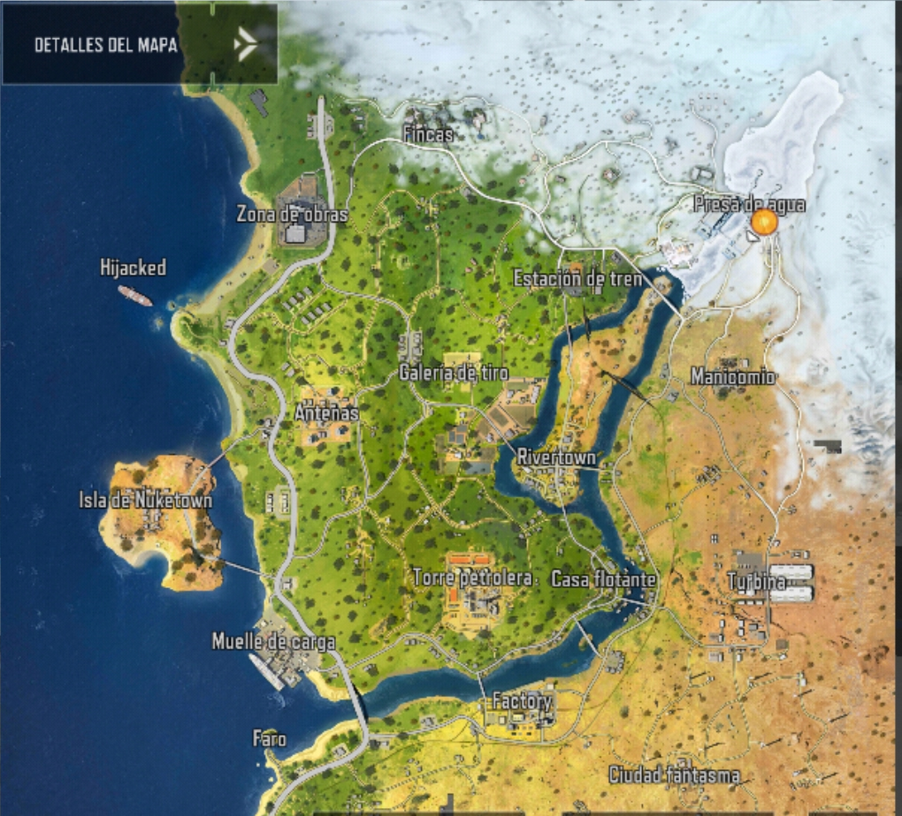
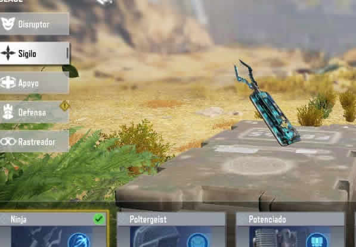

Battle Royale es un género de juegos multijugador en el que los jugadores compiten para ser el último superviviente en quedar en pie. Inspirado en la película japonesa “Battle Royale” y la novela en la que está basada, este género combina mecánicas de supervivencia, exploración y saqueo de ítems. En un juego de Battle Royale, los jugadores son arrojados a un mapa extenso y deben buscar armas, equipo y recursos mientras se enfrentan a otros jugadores. Aquí tienes algunos detalles sobre Battle Royale:
- El modo Battle Royale se puede jugar en solitario, dúo o escuadrón, con la opción de elegir entre primera o tercera persona. El mapa se va reduciendo con el tiempo, obligando a los jugadores a acercarse y a luchar. El mapa tiene diferentes zonas, como la plataforma de lanzamiento, el muelle, el campo de tiro, la granja, etc., donde se pueden encontrar diferentes tipos de armas, equipamiento y vehículos. Los vehículos incluyen motos, coches, helicópteros, etc., que se pueden usar para desplazarse por el mapa y atacar a los enemigos. Los vehículos tienen una barra de salud y pueden ser dañados o destruidos por el fuego enemigo o por el círculo de gas.
- El modo Battle Royale tiene un sistema de clases, que permite a los jugadores elegir entre diferentes roles, como Asalto, Francotirador, Médico, Ninja, etc. Cada clase tiene una habilidad especial y un objeto pasivo, que se pueden usar en las partidas para obtener ventajas. Por ejemplo, la clase Asalto puede lanzar un dron que marca a los enemigos cercanos, la clase Francotirador puede usar un sensor táctico que revela la posición de los enemigos lejanos, la clase Médico puede usar un botiquín que cura a los aliados, la clase Ninja puede usar un gancho que le permite desplazarse rápidamente, etc. Las clases se pueden desbloquear y mejorar con puntos de experiencia, que se obtienen al jugar al modo Battle Royale.
- El modo Battle Royale tiene un sistema de botín, que permite a los jugadores recoger y equipar diferentes objetos que encuentran en el mapa o que les sueltan los enemigos eliminados. Los objetos incluyen armas, municiones, accesorios, granadas, blindajes. Las armas se dividen en diferentes categorías, como rifles de asalto, subfusiles, escopetas, rifles de francotirador, y tienen diferentes atributos, como daño, alcance, cadencia, precisión. Los accesorios se pueden usar para mejorar las armas, como miras, silenciadores, cargadores, culatas. Los blindajes se pueden usar para aumentar la protección. Los objetos tienen diferentes niveles de rareza, que se indican por el color, siendo el blanco el más común y el dorado el más raro.
- Si mueres tienes la opcion de ser reanimado y volver cuando salga el vuelo de reanimacion, este vuelo es limitado, pues cuando la zona segura ya se ha reducido considerablemente no puedes volver.
En Battle Royale existe dos mapas con diferentes areas en las que el jugador debe usar estrategias para ir adentrandote en la zona segura e ir sobreviviendo mediante avanzas.

El mapa Isolated es el primer mapa que se lanzó para el modo Battle Royale de Call of Duty Mobile. Es un mapa que combina elementos de las sagas Black Ops y Modern Warfare, ofreciendo una variedad de escenarios clásicos y nuevos, como Nuketown, Launch Base, Nuclear Plant.
El mapa tiene un centro nevado y una periferia más cálida, lo que crea un contraste de climas y terrenos. El mapa también tiene un sistema de cajas de suministros, que son cajas que se lanzan periódicamente desde el aire y que contienen objetos de alto nivel, como armas legendarias. También tiene un sistema de Isolated HQ, que es una zona flotante que contiene objetos de alto nivel, pero que también es muy peligrosa y competitiva.
El mapa también tiene un sistema de botín, que permite a los jugadores recoger y equipar diferentes objetos que encuentran en el mapa o que les sueltan los enemigos eliminados, como armas, accesorios, granadas, blindaje para aunmentar la proteccion del operador. También tiene un sistema de jefes y monstruos, que son enemigos poderosos que aparecen en ciertas zonas del mapa y que al ser derrotados sueltan objetos de alto nivel, como armadura de nivel 3. El mapa también tiene un sistema de actualización de clases, que permite a los jugadores mejorar sus clases usando terminales que se encuentran en el mapa y que les dan más ventajas y beneficios.

Mapa BlackoutEl mapa Blackout es el segundo mapa que se lanzó para el modo Battle Royale de Call of Duty Mobile. Es un mapa que se basa en el primer mapa de Battle Royale que apareció en la franquicia de Call of Duty, que es el que se vio en Black Ops 4.
El mapa tiene un aspecto más oscuro y realista que el mapa Isolated, y ofrece una variedad de escenarios que se inspiran en las entregas anteriores de Black Ops, como Firing Range, Array, Nuketown Island. El mapa también tiene un sistema de botín, que permite a los jugadores recoger y equipar diferentes objetos que encuentran en el mapa o que les sueltan los enemigos eliminados, como armas, accesorios, granadas, blindajes. El mapa también tiene un sistema de cajas de suministros, que son cajas que se lanzan periódicamente desde el aire y que contienen objetos de alto nivel, como armas legendarias.

En ambos mapas existen areas de interes especial, como puntos de interes clave y areas de botin de alta calidad que atraen a los jugadores y fomentan el combate intenso.
Las clases de operador o habilidades en Battle Royale, son roles especificos que los jugadores pueden elegir al inico de una partida para obtener habilidades unicas y ventajas en el campo de batalla. Cada clase de operador tiene sus propias habilidades especiales que pueden ayudar a los jugadores a adaptarse a las direfentes situaciones y estrategias del juego. A continuacion se estaran mencionando una de cada distinta clases de habilidades:
- Defensor: El Defensor es una clase que se enfoca en la protección y el apoyo del equipo. Su habilidad especial es el "Escudo Transformable", que despliega un escudo portátil que puede bloquear el fuego enemigo y proporcionar cobertura para el jugador y sus compañeros de equipo.
- Médico: La clase Médico está diseñada para brindar apoyo médico y curación a los compañeros de equipo. Su habilidad especial es "Curación Rápida", que permite al jugador curarse a sí mismo y a sus compañeros más rápido de lo normal.
- Ninja: La clase Ninja se centra en la movilidad y el sigilo. Su habilidad especial es "Grapple Hook", que permite al jugador lanzar un gancho para desplazarse rápidamente por el mapa y acceder a lugares elevados de forma rápida y sigilosa.
- Mecánico: El Mecánico es una clase que se especializa en el uso de drones y equipos tecnológicos. Su habilidad especial es "EMP Drone", que despliega un drone que puede desactivar temporalmente los dispositivos electrónicos enemigos, como torretas y sensores.
- Rastreador: La clase Rastreador se enfoca en el combate a larga distancia y la precisión. Su habilidad especial es "Sensor Dart", que despliega un sensor que revela la ubicación de los enemigos cercanos en el minimapa.
Estas son solo algunas de las clases de operador disponibles en Call of Duty Mobile. Cada una ofrece habilidades únicas que pueden adaptarse a diferentes estilos de juego y estrategias.
